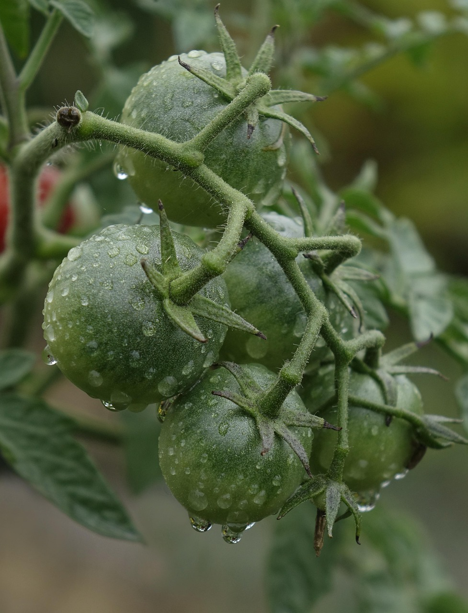
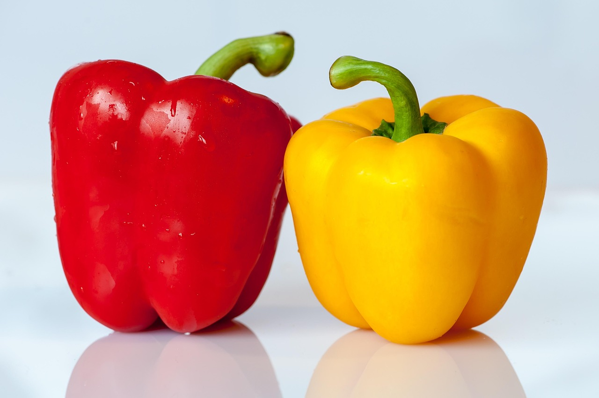
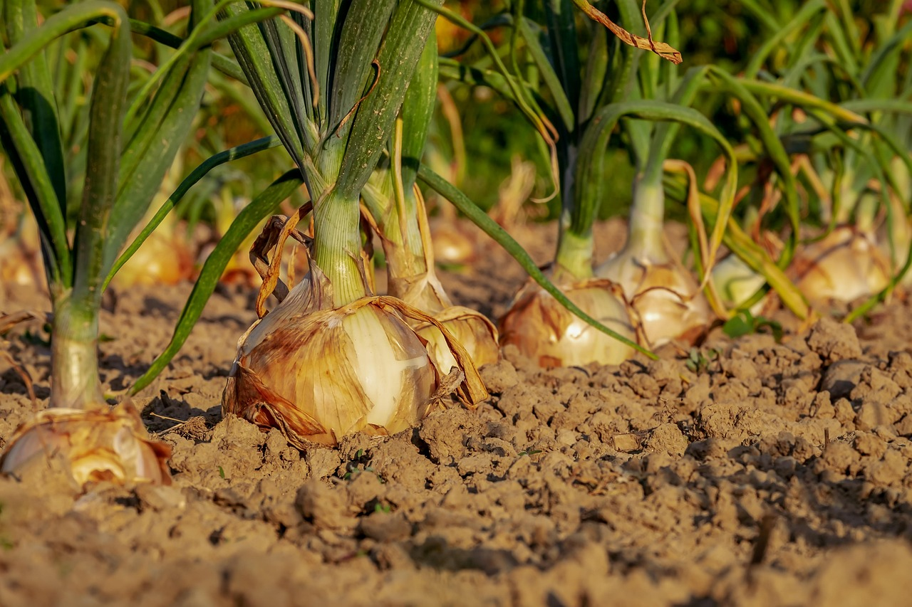

Planting by Season
Understanding the best times to plant various vegetables and herbs can significantly improve your gardening success. Different plants thrive in different seasons, so following a seasonal calendar helps ensure optimal growth and yield. Here’s a guide to what you can plant in each season:

Spring: Tomatoes
 Fall: Carrots
Fall: Carrots
Best planted in early spring for a bountiful summer harvest.
Spring: CucumbersGrow well in warm soil and full sunlight.
 Summer: PeppersPlant after frost and enjoy sweet or spicy varieties.
Summer: BeansEasy to grow and quick to harvest in warm seasons.
Fall: Carrots
Plant in cooler weather for sweet and crisp roots.
Fall: SpinachGrows best in cool weather and partial shade.
Winter: GarlicPlant in late fall for a summer harvest.
 Winter: OnionsThrives when planted in cool soil before winter.